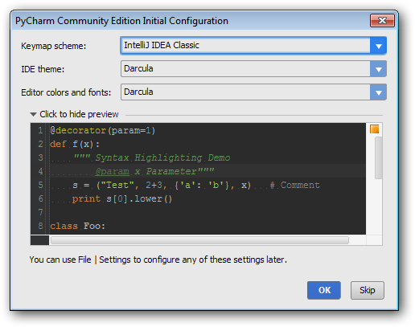
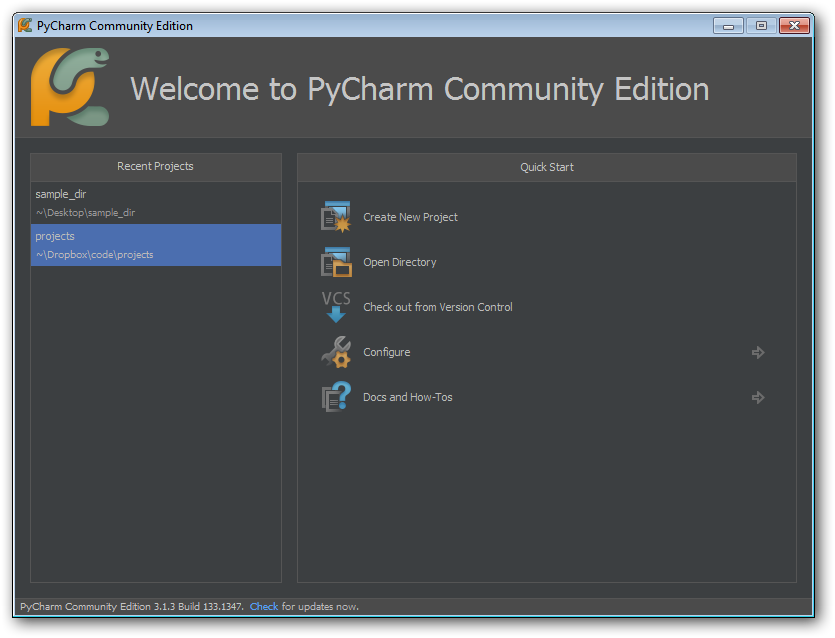
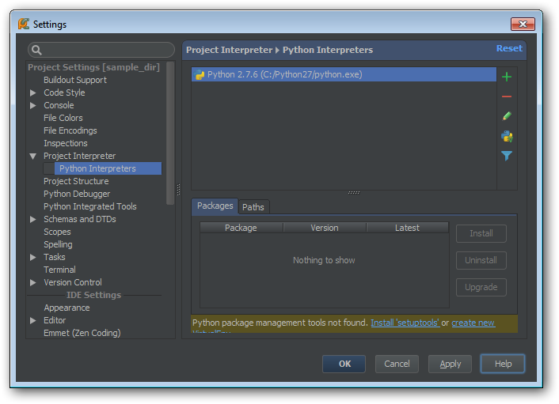
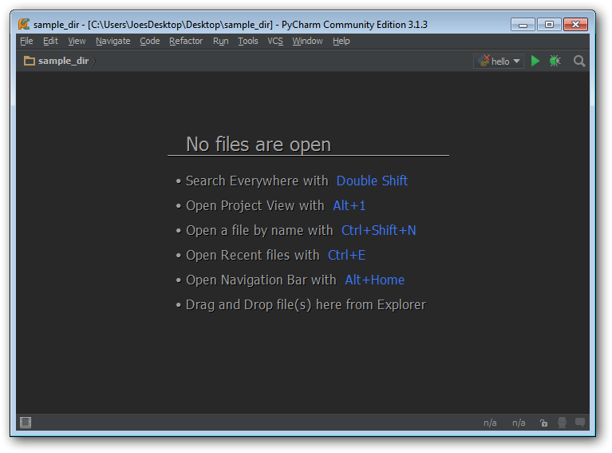
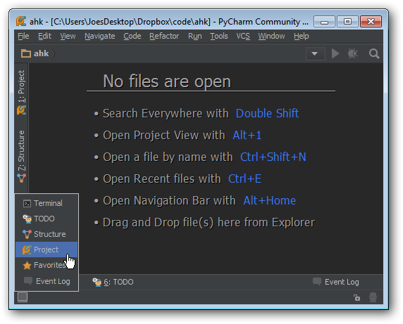
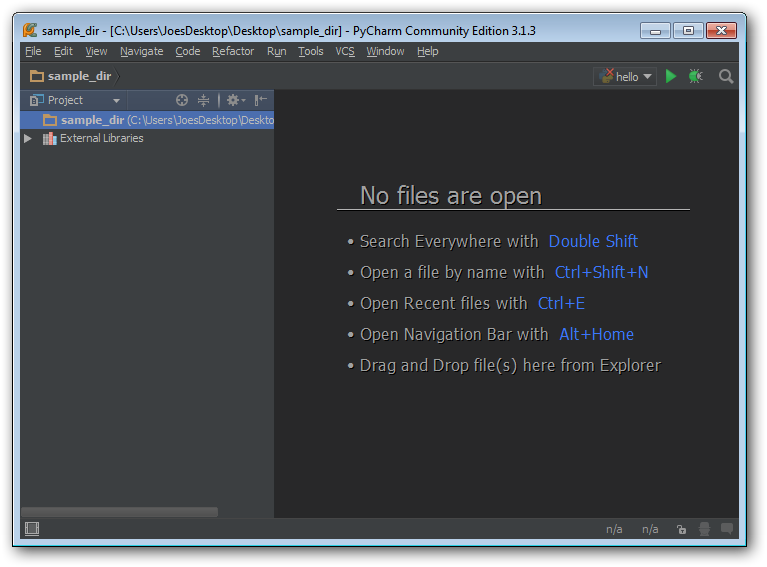
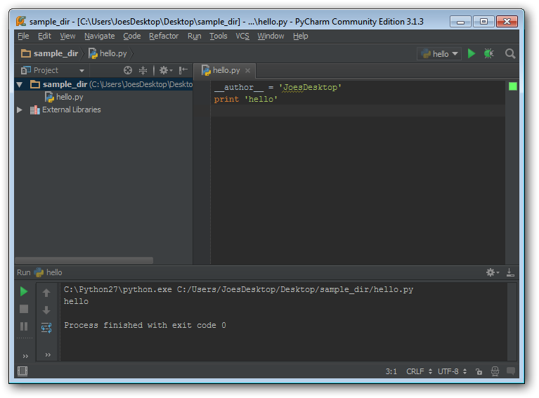

The third part in the Getting Started with Python series, this article is discusses the benefits of using an IDE (Integrated Development Environment) almost exclusively for both developing and executing code, recommends pyCharm, and discusses how to configure pyCharm.
As with the other articles in the series, Learning Python and Using an IDE, it is targeted at beginners who want to learn a general purpose programming for personal use and/or to supplement their professional skillsets.
Most IDE's will have the basic features below, which will be beneficial to programmers at any level:
- Basic error identification
-e.g. using a variable not yet declared
- Automatic indenting
- Code completion
- works like google search auto-complete
- imported module attribute/methods
- internal variables and functions
- Code 'Structure' navigation
- 'Click to navigate to code' on code errors
Of course, if you start to get serious about programming, there are many other features you'll get into
JetBrains pyCharm, that was easy!
pyCharm is the best python IDE out there right now. A few years ago, this spot was held by a Java IDE called Eclipse with a Plugin Called pyDev. PyCharm pretty much better all-around in my opinion, as well as the community at large (pyCharm vs pyDev Google Trends comparison). pyCharm is used by professional software developers and amatures alike.
Go ahead an create a directory for your python code. I highly recommend coding out of a Dropbox directory. My code lives in a folder [dropbox]/code/projects and then subdirectories from there for different projects. I keep a subdirectory for examples/tutorials, like those from the Google Python Class
You should also have Python installed at this point. Following my suggestion, that will be version 2.7.x with default selections.
Download pyCharm Community Edition. The professional edition includes a lot of extra great features which you can research on JetBrains' site, and its a steal for only $100, but Community Edition is free and has all of the core Python functionality you need, especially as a beginner.
Install pyCharm with defaults selections. I install to Dropbox and use the same installation from multiple computers. The executable is at [install dir]/bin/pyCharme.exe, and I just make separate shortcuts to that on each computer I use (the paths are different).
You won't always see the two screens shown below. Don't worry, I'll include instructions
for doing everything from the main GUI as well.
On first startup you will see:

The defaults are fine, thought I personally like the Darcula theme a lot.
The next screen will be shown whenever no project is open (such as after a fresh
installation):

Pick 'Open Directory' and pick the folder you've created for your code. This will create
a 'project' there. Until you manually close it, starting pyCharm will load up this
'project' automatically, e.g. you will go straight to the main interface.
At this point, we'll assume we're at the standard interface and go ahead and set-up configure the Python executable
- Goto File -> Settings
- From the list on the left, Expand 'Python Interpreter' -> Select 'Python
Interpreters'
- Click '+' (top right)
If installed at the default location, the context menu that appears should have a
selection like C:/python27/python.exe
Otherwise pick 'Local...' and navigate to python.exe inside the desired Python
installation
At this point you should be seeing something like:

Click OK.
At this point you should be at the main GUI and have a project/directory opened where you
want to keep your code. If you are at the main GUI, you have a project open. If its not
at the location you want, go to File -> Open Directory... If there no files in your
project dir, the GUI will look something like:

Mouse over the square in the bottom left and click 'Projects' to show the Projects
pane

Now the GUI should look like:

- Right click on the main project folder ('sample_dir' in this case)
- New -> Python file
- Name it 'hello'
- Enter into the file editor
print 'hello'
- Go to Run -> Run..
- Pick 'hello' from the small pop-up
- The Terminal should appear and show the output of the programs

Congrats, you're now a pyCharm user!
- Run -> Run will always run the last script, use Run -> Run.. to get the selection
menu to run another script
- If you need to have files outside of a single large projects directory, multiple
projects/directories can open at once
- File -> Open -> Select Folder
- Select 'open in Current Window' and 'Add to Currently OPen
Projects'
- As your scripts start to get longer, you'll want to start using the 'Structure' pane to
quickly navigate between functions/classes/etc
- Set convenient Hotkeys for Run and Run... you will be pressing them a lot
- File -> Settings -> (From list on left) Keymap